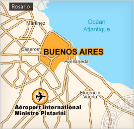

Bienvenue sur ce guide pratique ! Sur cette page, je vous explique les différentes options de transport pour voyager de Genève jusqu'en Argentine.
Moyens de transport depuis Genève :
L'avion est le seul moyen de transport pour faire le trajet de Genève à Buenos Aires(Argentine)
- Escales: Aucun vol direct n'existe. Comptez 1 à 2 escales (Madrid, Paris, Francfort ou Zurich).
- Durée et prix Entre 16 h et 19 h de trajet au total. Le billet aller-retour coûte entre 850 et 1 150 CHF.
Départ et arrivée: Départ de l'aéroport de Genève (GVA) et arrivée à Buenos Aires Ezeiza (EZE).
- Trajet: Impossible jusqu'en Argentine. Pratique pour rejoindre l'aéroport de Zurich ou de Paris.
- Horaires: et durée. Départs fréquents depuis Genève-Cornavin. Comptez 3 h pour Zurich et 3 h 15 pour Paris.
- Prix: Entre 50 et 150 CHF selon la réservation.
Train(pour rejoindre un aéroport voisin)
- Trajet: Non applicable jusqu'à Buenos Aires. Utile pour aller aux aéroports de Lyon ou Zurich.
- Distance et durée: 150 km (1 h 45) pour Lyon. 280 km (3 h) pour Zurich.
- Péages: Environ 15 à 20 EUR de péage vers Lyon. Vignette suisse à 40 CHF vers Zurich.
Voiture (pour rejoindre un aéroport voisin)
- Disponibilité Liaisons directes depuis Genève vers les aéroports de Lyon, Zurich ou Milan.
- Horaires et prix: Plusieurs départs par jour dès 15 à 45 CHF.
Bus / Car (pour rejoindre un aéroport voisin)
- Navette ou bus: La navette Tienda León rejoint le centre en 50 minutes (environ 12 CHF). Le bus public (ligne 8) prend 1 h 30 (moins de 1 CHF).
- Taxi ou VTC: Comptez 45 minutes jusqu'au centre pour environ 30 CHF (Uber, Cabify ou taxi officiel).